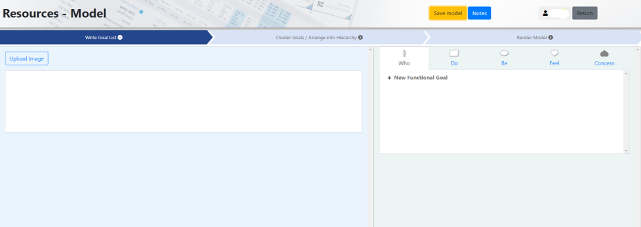

Chapter 6: Github
Contents
Chapter 6: Github¶
Configuring Your Team’s Repository¶
Your first task once you decide to use GitHub is to set up a repository. You can learn how to do that here.
Once you have created a repository, there are several considerations when establishing how your team will work with the repository.
README¶
All teams should have a project level README file that explains your project, and what your system aims to do. It should also provide some detail as to how to use your code, along with any other useful information (the directory structure could be useful for complex file structures).
Teams can also add README files for separate components of the project, such as frontend and backend, which may detail specific commands/instructions.
Licenses¶
If you are creating a repository with the intention of making it publicly accessible eventually, you need to have a license to allow other developers to collaborate (and to protect you from misuse). GitHub provides a detailed guide on licenses along with a tool to determine which license is appropriate for your repository.
Branch Protection¶
When working on a software project, you want to ensure that critical branches (production branches) are not accidentally tampered with or deleted. Branch protection helps solve this by allowing developers to configure their repository such that key branches have certain protections that prevent deletions or require certain checks to pass before modifications. Such branches are called protected branches.
Find out how to protect your branches on GitHub here.
Integrations¶
Integrations can help manage your development workflow. - Rather than having to visit GitHub’s website each time you have a pull request, you can make use of the GitHub bot on Slack to automatically send you notifications of new PRs. - Discord has a similar webhook that can be configured using this guide.
Code Reviews¶
Code reviews involve your teammates reviewing your work to ensure that code quality is maintained, and any errors are identified.
Code Review Activities¶
Pair programming: Having two developers working on a single unit of work; one person writes the code (driver) whilst the other reviews code real-time (navigator).
Pull requests: Having 1 or more developers review code changes before it is merged.
Pull Requests¶
Commonly referred to as PRs.
Pull requests allow developers to review changes made on a certain branch before merging it into another. When team members complete some functionality and want it to be merged, they create a pull request, requesting for their changes to be pulled into the main branch. Developers can nominate reviewers to look at their pull request. Reviewers can inspect the code and either approve the changes, or request changes. Once approved, the developer can merge their code into the main branch.
Why Use Pull Requests?¶
Team members must review and check that the code changes are acceptable, thereby improving code quality.
Errors have a greater chance of being noticed early, as there is more than one team member reviewing/testing the changes.
They improve the team’s understanding of code as developers are forced to read other developers’ code; thereby dispersing knowledge of the code’s functionality more widely across the team.
Pull Request Templates¶
Ensuring your pull request has enough detail for a reviewer is crucial. If the reviewer does not understand what part of functionality has been added, they cannot provide a meaningful review. To avoid this, a pull request template can be useful. This provides a guideline on what information a developer should provide in the pull request, along with any mandatory checks that have already been completed.
You can view a sample template here.
To see an example of how to include PR templates in your repository, please see this Medium article.
Git Workflows (Branching Strategies)¶
A standard approach to organising Git actions within the project. Let us consider two common strategies…
Feature Branching¶
Feature branching entails creating a new branch for a new feature and using that same branch until the feature is completed. After completion, the feature branch is merged back into the main branch.

Source: Optimizely
There are several flavours of feature branching but we will examine Gitflow, by far one of the most popular branching strategies.
Gitflow¶
Gitflow relies on long-lived branches for development. There are two main branches, main and develop, with main being the production-ready codebase and develop reflecting changes to be made in the next release. Developers create feature branches off develop, and when complete, developers make a pull request to be merged into the develop branch. When the team is ready for a release, then a new branch is created and the code is tested before it is merged into the main branch.
| Advantages |
Disadvantages |
|---|---|
| Branches remain in a clean state. |
Long-lived branches can be hard to integrate with the main branch; have diverged too much. |
| Ideal for when multiple versions of a product are required. |
Releases are delayed, and if there are many changes, could be highly problematic. |
| |
Final merge from develop to the main branch can have many changes which may be overlooked by developers. |
You can view a guest lecture from Canva where Gitflow is explained (from 1:16 to 1:23) here. Password: j_G3NVkx9MYz.
Trunk Based Development¶
Trunk based development uses short-lived branches which are regularly merged into the trunk, reducing any delays associated with integrating code changes.

Source: Optimizely
| Advantages |
Disadvantages |
|---|---|
| Reduces likelihood of divergence from main. |
Frequent merging can lead to breaking updates. |
| Minimise merge conflict. |
If slow build process, then there may be delays as people merge back into trunk. |
Software Releases¶
When your team has completed a sprint or wants to make a new release, there are several steps you should complete.
Releases are comprised of a tag and release notes.
Tags¶
GitHub allows developers to create tags. These provide teams to mark key milestones in a project by creating a tag off a certain commit. Tags are useful in releases, and you can name a tag by the associated version number, and that way developers can easily find all previous versions of the production-ready software by looking at the tags.
Tags are also necessary when creating software that is not yet production ready when working for a client. They need to be able to access the work completed in a sprint to see changes, but if the application is not yet live, then a tag is used to update the client on project status.
Release Notes¶
When you are creating multiple releases, it is important to explain what key changes have been made to the product. In a commercial project, release notes inform users of changes and clearly indicate the incentive to upgrade to the latest version (for example, patching authentication security bugs is a good incentive for users to migrate to the latest version of a product). In your project, the release notes provide an appropriate level of detail for your client to understand exactly what features and capabilities are available in each release.
Writing Good Release Notes¶
Keep it simple and avoid technical jargon,
Be specific about what has been implemented, and
Group your notes logically. Creating headings for fixes, improvements and new features may be beneficial
For an example, please refer to this open-source project’s release notes.